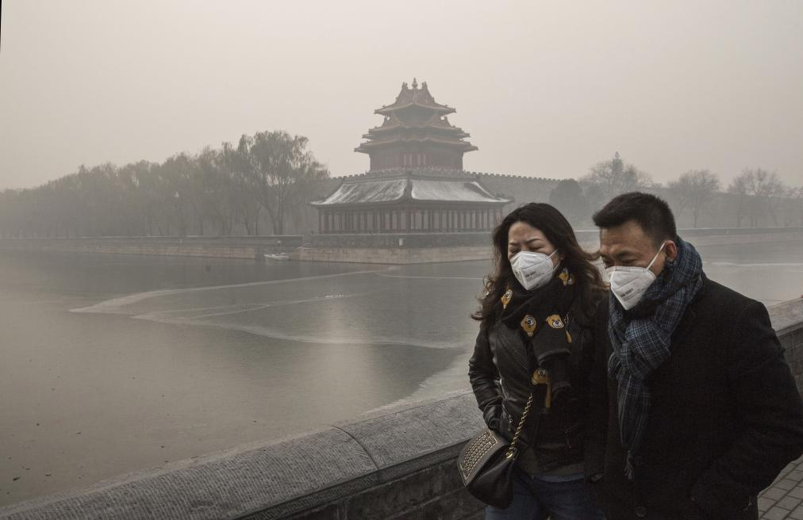

Hong Kong is a city, and former British colony, in southeastern China. Vibrant and densely populated, it’s a major port and global financial center famed for its tower-studded skyline.
It’s also known for its lively food scene – from Cantonese dim sum to extravagant high tea – and its shopping, with options spanning chaotic Temple Street Night Market to the city’s innumerable bespoke tailors.
Sydney
Beautiful and Fun Sydney
Sydney, capital of New South Wales and one of Australia's largest cities, is best known for its harbourfront Opera House, with a distinctive sail-like design.
Massive Darling Harbour and Circular Quay are hubs of waterside life, with the towering, arched Harbour Bridge and esteemed Royal Botanic Gardens nearby. Sydney Tower’s 268m glass viewing platform, the Skywalk, offers 360-degree views of the city, harbour and suburbs.
Tehran
Polluted and Troubled Tehran
Tehran is the capital of Iran and Tehran Province. With a population of around 9 million in the city and 16 million in the wider metropolitan area, Tehran is the largest city and urban area of Iran.
Warsaw
Frozen and Historical Warsaw
Warsaw is the sprawling capital of Poland. Its widely varied architecture reflects the city's long, turbulent history, from Gothic churches and neoclassical palaces to Soviet-era blocks and modern skyscrapers.
As Poland’s cultural hub, Warsaw has a thriving nightlife and music scene, both classical and underground. After near-total destruction in WWII, Warsaw’s old town was faithfully restored to its pre-war appearance.
New York
Big and Fancy New York
Home to the Empire State Building, Times Square, Statue of Liberty and other iconic sites, New York City is a fast-paced, globally influential center of art, culture, fashion and finance.
The city’s 5 boroughs sit where the Hudson River meets the Atlantic Ocean, with the island borough of Manhattan at the “Big Apple's" core.
Pyongyang
Polluted, oppressed and backwards Pyongyang
Pyongyang is the capital of North Korea and the largest city in the country. Pyongyang is located on the Taedong River and, according to preliminary results from the 2008 population census, has a population of 3,255,388.
Jerusalem
Exemplary Jerusalem
Jerusalem, a Middle Eastern city west of the Dead Sea, has been a place of pilgrimage and worship for Jews, Christians and Muslims since the biblical era.
Its Old City retains significant religious sites concentrated around the Temple Mount compound, including the Western Wall, sacred to Judaism, and the Dome of the Rock, a 7th-century Islamic shrine with a gold dome.
Beijing

Lung's worst nightmare Beijing
Beijing, China’s massive capital, has history stretching back 3 millennia. Yet it’s known as much for its modern architecture as its ancient sites such as the grand Forbidden City complex, the imperial palace during the Ming and Qing dynasties.
Nearby, the massive Tiananmen Square pedestrian plaza is site of Mao Zedong’s mausoleum and the National Museum of China, displaying a vast collection of cultural relics.